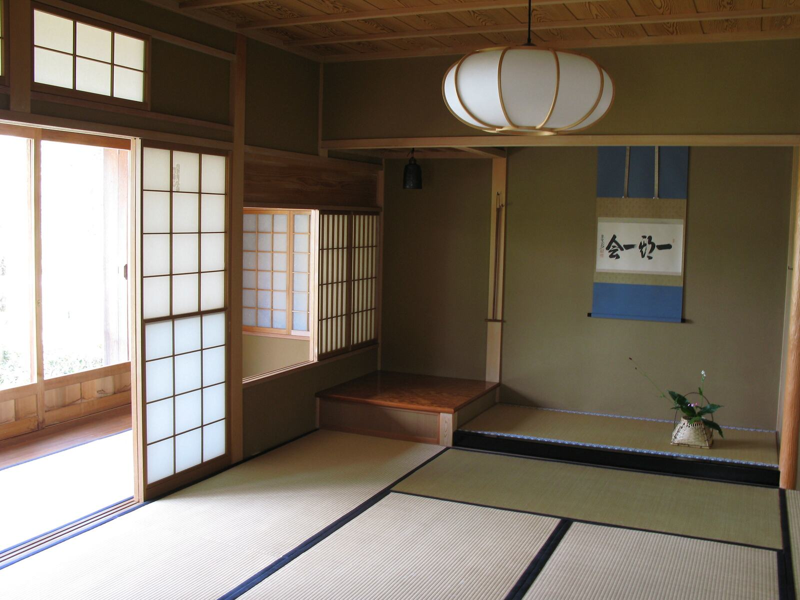
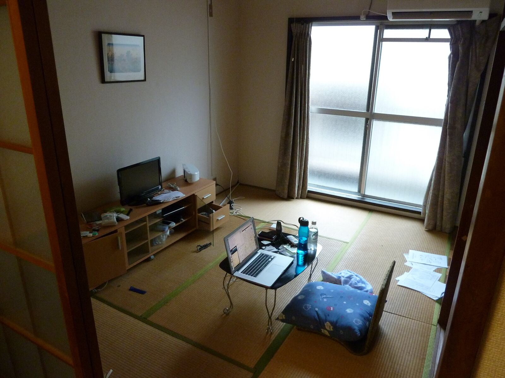
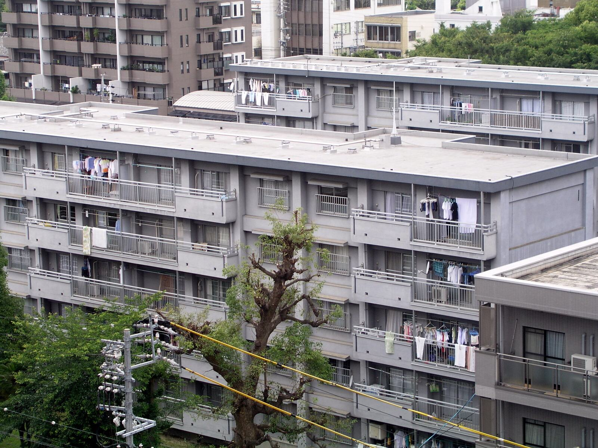

退去後
原状回復の手配が重なった
繁忙期に複数の退去が重なり、いつもの施工会社だけでは次の募集に間に合わない。クロスや床の張替え、ハウスクリーニングなど、原状回復の手配をご相談いただけます。
原状回復や入居中の小修繕で、いつもの施工会社の手が回らない時に。物件の写真と情報をお送りいただければ、内容を確認のうえ、対応できる施工パートナーの手配を調整します。

普段の発注先で対応できている修繕まで、お任せいただく必要はありません。手配に困る場面でお使いください。
繁忙期に複数の退去が重なり、いつもの施工会社だけでは次の募集に間に合わない。クロスや床の張替え、ハウスクリーニングなど、原状回復の手配をご相談いただけます。

建具の開閉や水まわりの部品など、入居中の小さな不具合。入居者様との日程調整の進め方も含めて、管理会社様のルールに合わせてご相談させてください。

共用廊下や階段、外壁の小さなひびなど、部分的な補修の相談先として。写真で状況を共有していただき、現地確認が必要かどうかからご案内します。
内装は頼めるが、建具や外まわりなど、別の工種の施工会社とつながりがない。
施工前後の写真と見積の内訳を、オーナー様へのご報告に使いたい。
すぐに現地へ行けないため、まずは写真で状況を共有して相談を始めたい。
次の募集までの空室期間を延ばさないよう、対応できるかどうかと着工できる時期を先にお知らせし、段階ごとに予定をご案内します。
ご相談は、写真と物件情報から始められます。現地確認での立会いの要否や鍵の扱いは、案件ごとに確認し、見積の前にお知らせします。
工事内容と金額の内訳をご提示します。オーナー様へのご説明やご承認の取得にお使いください。
繁忙期でもご相談いただけます。対応できるかどうか、現地調査が必要か、着工できる時期を、見積の前にお知らせします。
完了後に気になる箇所があれば、愛媛修繕デスクへご連絡ください。施工パートナーとの調整は当デスクが行います。
施工後の状況を写真でお伝えすることを基本としています。現地へ行かずに仕上がりをご確認いただけます。
退去のご連絡を受けた段階でも、まずは写真と物件情報をお送りください。
ご相談を受け付けてから写真報告まで、次の12段階で進めます。各段階で、次に何が起きるかをお知らせします。
PHASE 1受付・確認
PHASE 2現地調査・見積
PHASE 3発注・施工
PHASE 4完了
所要日数は、案件の内容と施工パートナーの状況によって異なります。そのため一律の日数はお約束せず、段階ごとに予定をご案内します。正式な見積は、必要な現地確認と施工パートナーの判断を経てから提出します。
分かる範囲で構いません。不足している情報は、内容確認の段階でお問い合わせします。
退去・小修繕のご相談はこちら写真がない場合も、内容をご記入のうえご相談いただけます。
今ある1件を見積相談管理会社様から
ご相談いただけます。物件ごとに所在地と修繕内容が分かるようにお送りください。施工パートナーの手配状況により、物件ごとに時期が異なる場合があります。
入居者様との連絡方法は、管理会社様のルールに合わせてご相談させてください。管理会社様を通じた調整を基本としています。
鍵の受け渡し方法や立会いの要否は、案件ごとに確認し、見積の前にお知らせします。
費用負担の区分は、管理会社様・オーナー様のご判断となります。判断の参考になるよう、施工前の写真と工事内容の内訳をお渡しします。

状況が分かる写真と、物件の所在地・修繕内容をお送りいただければ、内容を確認のうえ担当者からメールまたはお電話でご連絡します。写真がない場合も、内容をご記入のうえご相談いただけます。